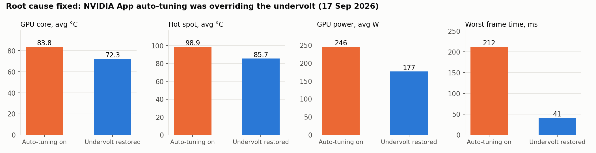
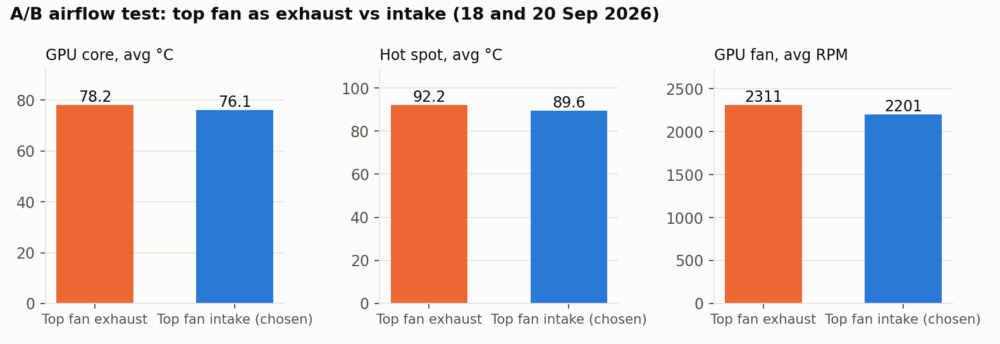
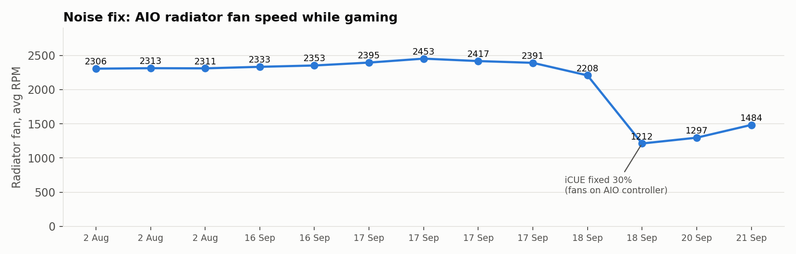
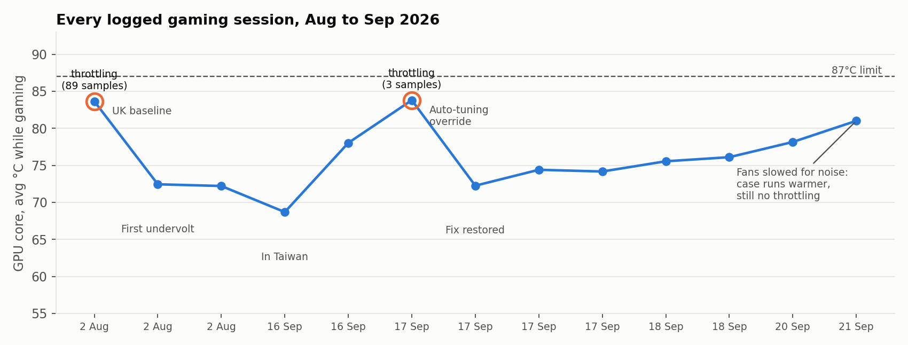

PC Thermal and Noise Fault Investigation
My desktop's graphics card was hitting its 87°C limit and throttling, the fans were loud, and the case was full of dust. I logged sensor data in real game sessions, changed one thing at a time, and compared runs. I found three separate root causes, one of which was software silently undoing my fix.
Averages while gaming, same-day before and after comparison, 17 Sep 2026. No session after the fix throttled.
System under test
| Part | Model |
|---|---|
| CPU | Intel Core i7-10700K |
| Motherboard | ASUS TUF GAMING Z490-PLUS (WI-FI) |
| Memory | 32GB DDR4 (4 x 8GB Corsair, rated 3600 CL18) |
| Graphics card | Palit RTX 3070 GameRock 8GB (about five years old) |
| CPU cooler | Corsair H100i Elite Capellix (AIO), fans run by a Corsair Commander CORE |
| Case | NZXT H510 |
Method and tools
- Log a full game session in HWiNFO64 for every change (13 gaming sessions in total).
- Compare gaming samples only: GPU load above 50%, so idle time does not skew the averages.
- Change one variable at a time, then log again.
- Watch HWiNFO's thermal throttling flag, not just temperatures.
Tools: HWiNFO64, MSI Afterburner (voltage curve, fan curve, temperature limit), OCCT (memory stability), ASUS BIOS (XMP), Corsair iCUE, NVIDIA App. I ran every test and made every hardware and settings change myself; the CSV analysis and charts were done with Claude's help (chart script).
Tests and results
1. Baseline: is the card thermally limited? (UK, 2 Aug 2026)
| Reading | Result |
|---|---|
| GPU core | average 83.7°C, max 87.4°C (at the 87°C limit) |
| Thermal limit flag | on in 89 of 353 gaming samples |
| Hot spot | average 100.5°C, max 106.5°C |
| Hot spot minus core | about 17°C on average, 19°C at peak |
| GPU fans | average 91%, peak 3,532 RPM |
| GPU power | average 203W of a 250W budget |
Heat, not power, was the limit: the card ran out of fan before it ran out of power. The first fix the same day, an undervolt to 0.9V in MSI Afterburner, brought the next two sessions to 72.4°C and 72.2°C with zero throttling.
2. Memory running below its rated speed
The RAM was running at 2133 instead of its rated 3600. I enabled XMP (DDR4-3600), then ran OCCT's TM5 Extreme memory test for one hour: zero errors, CPU cores peaking at 77 to 84°C, no thermal throttling. (From the OCCT result screen; not in the CSV logs.)
3. Unsafe shutdown counts
The drives reported 148 and 158 unsafe shutdowns, which can point to a failing power supply. The cause was me switching the PC off by holding the power button. The power supply was cleared and I stopped the habit. (From the drive health report; not in the CSV logs.)
4. Regression: the undervolt kept disappearing (Taiwan, 17 Sep 2026)
After shipping the PC to Taiwan, a session showed the card back at 1.0 to 1.1V and 246W. Root cause: NVIDIA App's automatic tuning was applying its own overclock and overriding Afterburner. I switched it off, re-applied the undervolt and logged again.
| Auto-tuning on | Undervolt restored | |
|---|---|---|
| GPU core | 83.8°C | 72.3°C |
| Hot spot | 98.9°C | 85.7°C |
| Voltage | 1.0 to 1.1V | 0.9V |
| Power | 246W | 177W |
| GPU fans | 96% | 83% |
| Thermal throttling | 3 samples | 0 |
| Worst frame time | 212 ms | 41 ms |

5. Airflow A/B test: top fan as intake or exhaust (18 and 20 Sep 2026)
Only the top fan direction changed between the two sessions.
| Top fan intake | Top fan exhaust | |
|---|---|---|
| GPU core | 76.1°C | 78.2°C |
| Hot spot | 89.6°C | 92.2°C |
| GPU fan | 2,201 RPM | 2,311 RPM |
| CPU package | 67.0°C | 66.7°C |
Decision: top intake. Cooler GPU, slower GPU fan, and positive pressure to keep dust out. Caveat: the sessions were two days apart, so room temperature may have differed slightly. I also cleaned the clogged radiator and turned the front fans round, which had been mounted backwards.

6. Noise: radiator fans stuck at high speed
The two radiator fans ran at about 2,300 to 2,450 RPM in every session while the coolant stayed at 37 to 40°C. A BIOS fan curve could not fix it, because these fans are run by the Corsair Commander CORE, not the motherboard. In iCUE, the Quiet preset only brought them from 2,391 to 2,208 RPM, because the coolant reached 40.5°C, where Quiet ramps up. A fixed 30% setting brought them to 1,212 to 1,484 RPM in game, about 40 to 50% slower, and the machine became quiet.
Trade-off, visible in the logs: with slower radiator fans, coolant rose to 45 to 47°C, CPU package to an average of 67 to 68°C and GPU core to 76 to 81°C. Still no throttling in any session.


Final state
- No thermal throttling in any of the 8 gaming sessions after the fix on 17 Sep.
- GPU core averages 72 to 81°C depending on the session, below the 87°C limit.
- Hot spot minus core about 13 to 15°C, so the card does not need opening for new thermal paste.
- One later match: 91.9 FPS average, 10.6 ms average frame time, worst spike 19.3 ms.
- Memory stable at its rated 3600; fans quiet; dust addressed with cleaning and positive pressure.
What I learned
- Measure before fixing: the obvious suspect (thermal paste) was not the main problem.
- Change one thing at a time, or you cannot tell which change worked.
- When a fix "stops working", look for another tool overriding it.
- Check which controller actually drives a component before changing its settings.
- Every fix has a cost: quieter fans meant a warmer case. Log it and decide on purpose.
Still open
- Try a coolant-based fan curve in iCUE to win back a few degrees without the noise.
- Turn on iCUE Device Memory Mode so the quiet profile holds without iCUE running.
- Refit the PCI slot covers to close the last dust gap.
- New thermal paste or pads only if hot spot minus core climbs above 18 to 20°C, or memory junction runs 95°C or more.